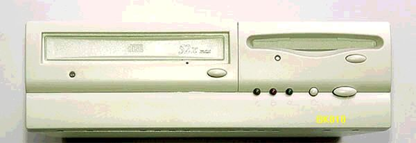

電源の修理

BKI810は、PC CHIPS製のベアボーンキットです。私のところへ来たのは、今年の９月で、HDとCDROMが
無い状態でした。Celeron800MHzと256MBのRAMが付いていて、試しに電源を入れたところ、全く反応がありません。
マザーボード上の、電源表示のLEDが点滅をしていました。電源のコネクタを指し直すと、偶然電源が入り、
HDのり付け、システムのインストールができましたが、翌日には電源が入りません。ネット上で調べると、
このBKi810は電源の故障が多く、普通のATXと異なる、特殊な電源で入手が困難なため、廃棄処分している
方もいるようです。秋葉原を丹念に探せば、交換可能な電源ユニットが、見つかるかもしれませんが、今回は、
面倒でも、分解して修理の可能性を調べてみました。開けてみると、部品点数が少なく、修理しやすそうです。
ルーペで見ると、5V回路の電解コンデンサ２個の、頭が膨らんでおり、１個は明らかに電解液が漏れた形跡が
あります。これは分かり易い、典型的な電源部の故障です。不良電解コンデンサは、2200μF10Vと1000μF10V
です。ジャンクな電源から外した、16Vの1500μFと1000μFに取り替えました。
現在は、発熱を押さえるため、CPUをC3-750Aに交換し、運用しています。中には、高性能をねらって、
PentiumIIIを使用している方もおられるようですが、C3こそ、こんな小型筐体に、最適なCPUではないかと思います。
半田コテを使った修理は、面倒である程度のスキルを要するため、あまりおこなわれないようですが、
今回のように、故障箇所と原因が推定できる場合など、挑戦してみる価値はあります。
(2002/10/11記)
古いAT互換機関係のページに戻る